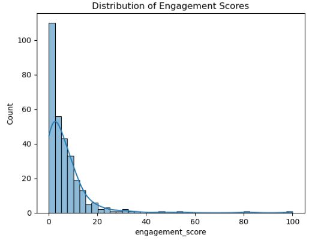
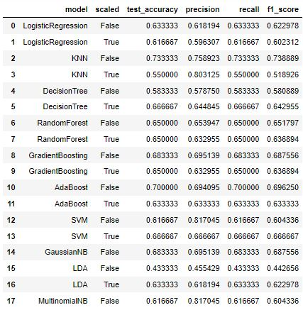
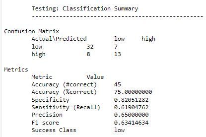
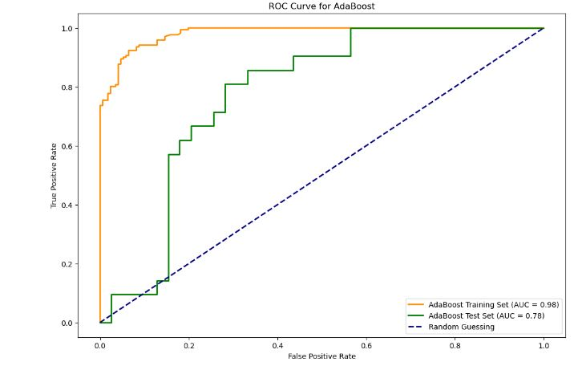

YouTube Channel Engagement Optimization Project Report
View Full Python Notebook on GitHub:
Introduction
This report presents a comprehensive analysis of my YouTube channel's data to optimize viewer engagement. Leveraging the YouTube API, the project systematically evaluates factors influencing video views and interactions, utilizing an engagement score calculated from views, likes and comments. In addition, the project involves building and comparing various predictive models to accurately classficy video engagement levels - as either high or low. By utilizing machine learning techniques and data-driven insights, the models aim to identify key patterns and factors that contribute to higher viewer engagement. This aspect of the project not only enhances the understanding of current audience behavior but also guides strategic content planning for improved performance.
Data Collection
Data was collected using the YouTube API. Channel and video statistics were extracted, including subscriber counts, total views, likes, comments and detailed video metrics. Additionally, viewer comments were collected for sentiment analysis, offering deeper insights into audience preferences.
New Features Created for Analysis and Model Building
- Time of Upload: Extraction of hour, day, month, year from the upload date. Identification of day of the week and weekends.
- Video Length Category (Short, Medium, Long): Categorization of video duration into short (0-60s), medium (60-300s), and long (300s+).
- Engagement Ratio (Likes to views, comments to views, likes to comments): Calculation of ratios like likes to views, comments to views, and likes to comments.
- Net Subscriber Gain per video: Computation of net subscribers gained for each video.
- Engagement Score (0-100): Creation of a score based on views, likes and comments of a video where normalization was done and weights were added to give views 65% weight, likes - 25% weight, comments - 10% weight.
- Engagement Category: Classification of videos into 'High' or 'Low' engagement categories based on the engagement score, using the top 30% as high engagement videos.
Data Preparation
- Missing values in descriptions were replaced with "Empty."
- Non-numeric values in 'comment_count' were converted to numeric.
- ISO 8601 duration format was parsed into seconds for ease of analysis.
- Duplicates and outliers were identified and addressed to maintain data integrity.
- Categorical data, such as 'category_id' and 'video_status,' were examined and refined.
Exploratory Data Analysis (EDA)
- Engagement Score Distribution: 
- Time Series Analysis:
- Temporal Analysis:
- Video Length Categories:
- Sentiment Analysis:
- Keyword Analysis for Identifying impactful keywords in high and low engagement videos:
The histogram shows us a right-skewed distribution of engagement scores with majority of videos at lower scores, suggesting that most content has low engagement. A small number of videos achieve high engagement. Identifying features of high-performing videos could provide actionable insights to increase overall engagement on the channel.

This graph shows us that the channel was active and gaining attention from 05-2021 to 11-2021 and then the channel has been quiet in attracting engagers since then but a little spike in early 2023. Meaning - the channel is at it's revival stage. Once, we gain some insights from this historical data, the channel can be revived.

Engagement peaks on Sunday and dips mid-week, indicating weekends may be more effective for uploads.

This graph shows us that this channel has succeded so far uploading short videos suggesting that concise content may be more effective at capturing audience attention.

The plot shows no strong correlation between comment polarity and engagement scores, indicating that neither positive nor negative sentiment consistently affects engagement


The word clouds for high engagement video titles show frequent use of impactful words like SECRET, FREE, REWARDS, iFerg (the most successful content creator of codm - call of duty mobile), CODM (Game name), Legendary and Skin (different skin series), which attracts viewers. In contrast, low engagement titles have terms like NUKE (NUKE series), Ranked, DAILY and player -> these words should not be avoided completely as, when these words were used, the video lengths were higher, so instead, we should not rely completely on this but should get an idea from the high engagment video keyword frequency.
Model Building
Extensive model building and evaluation processes were conducted to classify videos into high vs. low engagement categories, focusing on several key features and employing various machine learning techniques.
- Combining Text Features: Combined title and description keywords for analysis.
- Feature Selection: Selected features like duration, upload hour, title length, description length, day of the week, weekend status, and video definition.
- Data Cleaning and Encoding: Removed unnecessary columns and performed one-hot encoding on categorical features.
- Correlation Analysis: Identified and removed highly correlated features to avoid multicollinearity.
- Model Selection: Selected a variety of models including Logistic Regression, KNN, Decision Tree, Random Forest, Gradient Boosting, AdaBoost, SVM, GaussianNB, LDA and MultinomialNB.
- Data Scaling and SMOTE Application: Scaled the data and applied SMOTE for class imbalance handling.
- Model Evaluation: Evaluated models based on accuracy, precision, recall, and F1 score.
- Hyper-parameter Tuning: Performed Grid Search for hyper-parameter tuning, particularly focusing on KNN, Gradient Boosting, AdaBoost and GaussianNB.
- AdaBoost - Best Model: Identified AdaBoost as the best model post hyper-parameter tuning and conducted an in-depth evaluation including ROC curve analysis.
- Sample Prediction: Demonstrated the model's predictive capability with a sample data prediction.
The above steps culminated in the successful development of a model capable of effectively classifying YouTube videos into high or low engagement categories, providing crucial insights for channel growth and content strategy optimization.
Results
Model Evaluation
The table showcases a comparison between different machine learning models for model Selection for Hyper-parameter Tuning ->
- KNN (K-Nearest Neighbors): It performed well (0.7333 accuracy), especially in the non-scaled version.
- GradientBoosting: This model also shows promising results with an accuracy of 0.6833.
- AdaBoost: With an accuracy of 0.6833, AdaBoost is another strong candidate
- GaussianNB (Gaussian Naive Bayes): It achieved a decent accuracy of 0.6833 and might benefit from tuning.
Hyper-parameter Tuning

This table presents the outcomes of hyper-parameter tuning. The AdaBoost classifier, with specific parameter adjustments, attained the best accuracy. This underscores the impact of fine-tuning on achieving optimal model configurations that contribute to predictive success.
Classification Summary
The classification summary provides a detailed breakdown of the best model's performance on the testing data. The confusion matrix and subsequent metrics illustrate a balanced classification ability, considering both specificity and sensitivity, which are crucial for a nuanced evaluation of model accuracy.
ROC Curve for AdaBoost
The ROC curve shows us the preditive capability of the AdaBoost classifier, with AUC scores of 0.98 for the training set and 0.78 for the test set. The closeness of these two curves suggests that the model has generalized well, without overfitting to the training data.
Recommendations
- Optimize Video Length: Shorter videos tend to have higher engagement.
- Focus on High-Engagement Keywords: Use impactful keywords identified in the analysis.
- Adjust Upload Schedule: Align uploads with times and days showing higher engagement.
- Improve Video Quality: High-definition videos were more engaging.
Conclusion
The project successfully identified key factors influencing viewer engagement. The AdaBoost classifier, after tuning multiple times, emerged as the most effective model, achieving a 75% accuracy on test data (size of the dataset - 300 rows) The analysis provides actionable insights for enhancing the YouTube channel's performance, though continuous data acquisition and analysis are recommended for sustained growth and adaptability to changing viewer preferences.